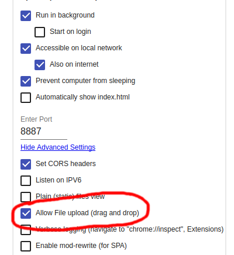

Não é permitido utilizar requisições de upload quando se carrega o html diretamente do HD, para contornar isto usamos o servidor estático 200OK
Os arquivos dropados no servidor serão salvos no diretório que contém os arquivos web. É possível permitir que outros computadores acessem o teu servidor, assim outras pessoas conseguem enviar arquivos
ATENÇÃO, não existe autenticação. É possível deletar ou sobreescrever os arquivos originais, inclusive o indes.html
var ajax = new XMLHttpRequest()
ajax.open("GET", "404.html", true)
ajax.onload = e => {
console.dir(e)
}
ajax.send()
var ajax = new XMLHttpRequest()
ajax.open("PUT", "ips/" + document.getElementById('inputnome').value + ".json", true)
ajax.onload = e => {
console.dir(e)
}
ajax.send(JSON.stringify({
nome: document.getElementById('inputnome').value,
ip: document.getElementById('inputip').value
},null,4))